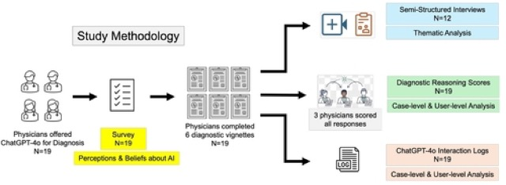
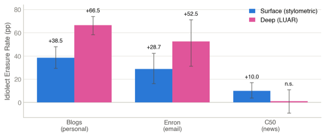

About
I’m a PhD student in Computer Science at the University of Iowa, advised by Rishab Nithyanand. My research examines how AI-mediated systems influence human communication, information seeking, and decision-making. I study how interacting with generative AI affects what people express, what information they encounter and rely on, and how they form judgments and make decisions. My work draws on Human-Computer Interaction and Computational Social Science.
Research interests: human–AI interaction, AI-mediated search and communication, algorithmic auditing, computational social science.
Research
How generative AI shapes access to information
Generative systems increasingly mediate information seeking by synthesising answers rather than presenting users with a ranked set of sources. I study how this changes the information people encounter. My current work compares conventional web search, large language models, and retrieval-augmented generation to examine differences in source selection, information coverage, and framing across politically contested and health-related queries.
Reliance on AI in clinical decision-making
I study how physicians evaluate and rely on AI-generated recommendations during clinical decision-making. As a research assistant, I contributed to two randomised studies of LLM-assisted diagnosis, including a study of 44 physicians examining whether AI-literacy training helps physicians identify and correct erroneous model recommendations and reduces automation bias (Nature Health, 2026; NEJM AI, 2026).
Publications

- Physicians used four prompting strategies: authority assertion (role assignment, scaffolding), workflow structuring, clinical reasoning (validation versus reliance), and iterative refinement.
- Context completeness mattered most. Pasting the full case into the model reached 62.5% diagnostic accuracy, compared with 39.1% for manually summarised prompts.
- 42% drifted from cautious scaffolding to direct queries over the session, yet every participant continued verifying the model's output through adversarial prompts and stepwise control.
- Junior physicians relied on structured scaffolding; senior physicians cross-checked opportunistically. Interviews framed the model as a "second brain," tempered by concerns about reliability, privacy, and patient trust.

- Heavy rewriting reduced LUAR attribution accuracy by 66.5 points on personal blogs and 52.5 points on workplace email, removing more than three quarters of the recoverable authorship signal.
- On beat-structured news, the deep attributer barely changed (+1.0, not significant), suggesting that topic can serve as a strong signal for identity.
- Even prompts explicitly instructing the assistant to preserve the author's voice removed most of the recoverable authorship signal.
- Double erasure: heavily rewritten messages also evade AI-text detectors, making them difficult both to attribute to their original author and to identify as AI-assisted.
* Equal contribution.
News
- September 2026Passed my PhD qualifying exam at the University of Iowa.
- August 2026"The Assistant Erased You" was accepted at the CSCW 2026 Workshop on the Broader Impacts of Generative AI in Communication, where I will give a paper talk and a lightning talk.
- April 2026Presented our work on physicians' use of large language models for diagnostic reasoning at CHI 2026 in Barcelona.
- August 2025Started my PhD in Computer Science at the University of Iowa, advised by Rishab Nithyanand.
- May 2025Graduated with Distinction from the Lahore University of Management Sciences after four consecutive years on the Dean's Honor List.
Teaching
- CS 1110 Introduction to Computer Science (Fall 2025, Spring & Fall 2026)
- CS334 / EE334 Principles and Techniques of Data Science (Fall 2024)
- CS202 / EE202 Data Structures (Spring 2024)
- CS210 / MATH252 Discrete Mathematics (Fall 2023)
Education
Contact
The best way to reach me is by email at mushna@uiowa.edu.
Department of Computer Science, University of Iowa, Iowa City, IA.